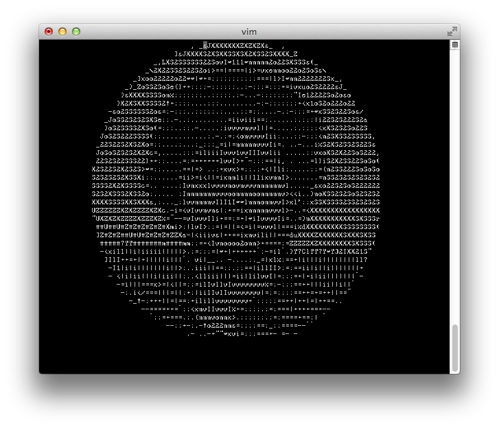

Email Is Still the Best Thing on the Internet
Nice piece by Alexis C. Madrigal on why the email will live long and strong for many years to come. Furthermore, I agree with thim that all these startups trying to replace it with some other proprietary protocol are pretty much doomed.
IM didn't kill the email and it has been around since the nineties; phone messengers have taken some of its market quota and use cases, but THE messaging protocol is still email.
Who knows, maybe in five years I have to eat my words. Meanwhile, I'm positive that it was a good choice of a protocol for feenbox
My new project: Feenbox, feeds on your inbox

I've always loved email. For me, even in the era of Whatsapp and Facetime, it is the ultimate form of communication. It can be personal or professional, heartwarming or annoying, instantaneous or asynchronous, small or big, long or short, easy or godmode. There are very few times where I prefer a quick IM communication, of course, but the bulk of my day is email.
My first internet on college got me reading email on Pine
on a linux terminal where we chatted using write(1) and wall(1)--that taught me how Ctrl-L refreshes the screen.
I started reading newsgroups thanks to Pine, and from there, Gopher, the IRC and other text services. For many people,
the internet is the browser; for me... well, I won't lie, but email comes a close second.
Since the advent of RSS, I always wondered why couldn't feeds be read by email. So, long before Google Reader shut down, I decided to get more control over my feeds, and created some scripts to receive them via email. I've been using them privately for years and, some months ago, I thought I could extend them a bit and make a public service from them.
You know the drill: "I have some scripts; surely it can't be that difficult to refactor some code and make it work for everyone". Months later, you're struggling with bugs, servers, feed providers and email clients. Right now, it is ready to talk about it. Not yet ready to show, not yet ready to launch, but let's go step by step.
Personally, I love receiving RSS by email, probably because I'm a power user. Besides RSS, I've been scripting Gmail's IMAP service to schedule incoming and outgoing mails, and by using tags, I make items get out of the way and come back at a specific date and time. Yes, like Boomerang, only some time before it existed--sorry if this sounds hipsterish, I honestly had no idea there was a market for that.
My inbox is always empty because all emails go to other folders, and a personally-crafted algorithm sorts them for me and floats important ones back to my inbox.
However, I didn't have time then to create a service around by hacky scripts anyway because of my full-time job. Nowadays I'm on a sabbatical, so I thought it could be a good opportunity to learn how to launch and manage an online product, and maybe make a bit of much needed recurring income.
Email has its advantages
Even if you are not a developer, Gmail provides with smart filters that can be intelligently used to handle incoming email. For example, when I got back from holidays I had a lot feeds waiting for me, but I deleted old item which no longer applied with a few searches by date and source, saving a lot of time. Managing emails is a solved problem.
But probably the thing I love the most is that email is offline and always in sync. Feed readers get crazy trying to sync their websites, smartphone apps and feed providers, but if you think about it carefully, IMAP deals with this problem for us. Your smartphone and computer always have the same items, and thanks to push email, always available for reading either online or offline. When you read one, it is automatically marked as read everywhere.
With Feenbox, I want to go one step further and provide much more metadata for email power users. For example, I'm working on attaching all images and small files to emails, because nothing is more infuriating than receiving a feed update where you can't read the actual comic or attached pdf document because it is only available online and there is a server or internet problem. With Feenbox, if you get an email, you get its contents.
Email has a widely known "share" feature: just forward it! Furthermore, most social websites, like Facebook and Flickr, have an incoming email gateway, so you can post anything to Facebook just by forwarding an email. That's pretty cool, but not many users know about that.
Scripting and filtering emails is so easy and powerful that I want to apply it to feed reading.
Presenting feenbox
feenbox is currently under development, still has some bugs, but the basic multi-user features are already implemented.
I want to make a dual effort, both to provide a service but also to teach users how to use their email efficiently. Every month there is a new post on Hacker News arguing that "we need to reinvent email", with which I usually disagree. Email is great, but we need to make an effort to educate users on how to make the most of it. The rest can be done with filters and IMAP scripting--and client-server programming, let's not forget the amount of work that Apple and Google are pushing towards the authentication side, data detection and such.
Let's say that feeds are an excuse to learn how to filter out emails, share them and convert them to various formats.
Finally, I go back to the beginning of my story. Since I love using terminals, Feenbox is built with delicate text/plain support. Right now it can convert images to ASCII art to let pine/mutt users get a quick preview of an image before opening their browser. I also have some more ideas on the pipeline, like the ability to automatically transform documents into text, OCR images and more.
I want to build a service that geeks and hackers can fall in love with, avoiding breaking their workflow. I want to restrict to a reasonable minimum the amount of external tools that are needed to process a single email, like web browsers, pdf readers, document editors, etc.
To summarize, feeds are a great excuse to experiment with email scripting. Besides feed handling, about 60% of the code are email parsers and data detectors and converters. By the way, for a guy who's been dealing with biological data for seven years, I don't know which is more difficult to parse, a human genome or a human email!

In a few months, it will be ready for an alpha release, and I set up a mailing list for those interested. I have currently sent two emails, one each month, with an extended introduction (in Spanish, but trust Google Translator) and a poll with the most requested features.
There is great communication with the subscribers and many have emailed me their suggestions. At the moment we are about 50, which is a tiny number, but this is a one-man operation, and I am already learning a lot about launching a product. I want it to be small and friendly.
If you are interested in the development or may consider applying as an alpha user, please sign up. The list is handled by Mailchimp, so you will get no spam and can unsubscribe at any time if you don't find it interesting.
Thanks for reading all of this! If you don't want to subscribe to the list, I'll also keep you informed on this blog.